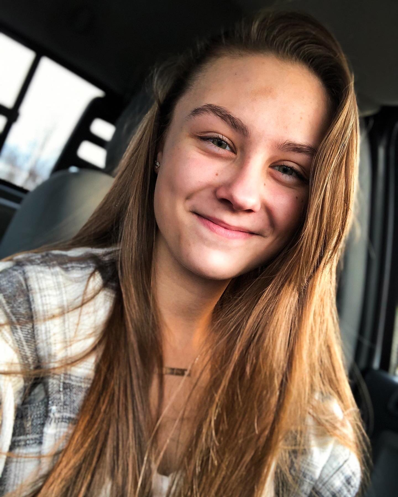

About Me

Hi, I’m Emma Grace Yoder — a lifestyle and creative photographer based in Northern and Central Indiana.
From capturing the energy of senior portraits to the quiet bond of a family or the excitement of a brand-new business launch,
I love turning life’s moments into timeless keepsakes.
I specialize in a little bit of everything — families, pets, graduates, maternity, newborns, real estate, and even nature —
because I believe every subject has a story worth telling.
When I’m not behind the lens, I’m studying communications at Purdue University,
where I’m combining creativity with strategy to better serve and grow my photography business.
Whether you're local or visiting the Elkhart area, I’d love the chance to work with you and capture something meaningful together.